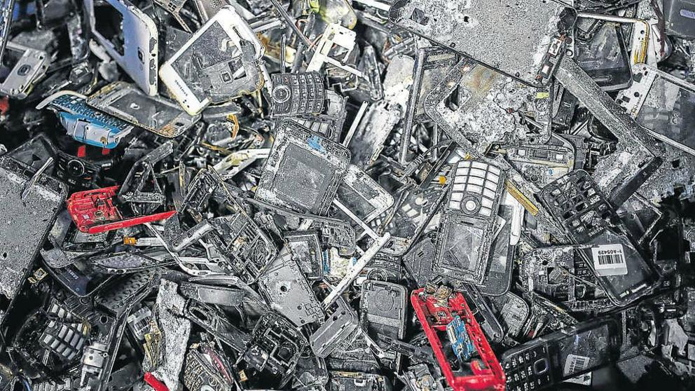

L’exportació de residus electrònics és il·legal per tots els països membres de la OCDE, ja que al Conveni de Basilea de l’any 1989 es va prohibir l’exportació de residus perillosos a països externs a la organització. Els residus electrònics compleixen aquesta condició ja que porten substàncies perilloses com el plom, el mercuri o el cadmi.
A tota la Unió Europea els productes electrònics es venen amb un impost al reciclatge amb el qual es recapten cada any 4.000 milions d’euros. A Espanya el sobrecost acaba essent entre 5 i 30 euros per usuari. Tot i això, tenim que 2/3 dels residus electrònics europeus no acaben arribant mai a un punt verd, ja que és més barat exportar-los al mercat negre.

A més a més, aquest tràfic il·legal de residus electrònics mou molts diners. Les empreses que els haurien de reciclar, en ocasions paguen diners als traficants perquè aquests se’ls enduguin; així els traficants aconsegueixen els residus a cost zero, i tots els materials que en puguin recuperar o revendre seran beneficis nets, creant un cercle viciós on el medi ambient paga el preu més alt.